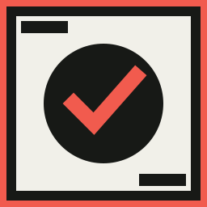

Pomodoro
Enfoque, descanso corto, descanso largo. Ritmos, sonidos, saltar, e historial exportable.

PomoDock Abrir PomoDock Web GitHubWindows · Código abierto · 0.3.0
Un espacio de enfoque local: timer, tareas, hábitos, notas, calendario, finanzas—y un agente privado que puede operarlos. Hecho para la pantalla vertical al lado del trabajo.
Qué es
PomoDock es una app Windows de código abierto para un monitor vertical secundario. La pantalla principal se queda con el trabajo. La otra sostiene el temporizador Pomodoro, la lista, los hábitos, las notas y—si quieres—una ventana viva de otra app.
Sin cuenta. Sin servidor de PomoDock. Los datos viven en SQLite en %LOCALAPPDATA%\PomoDock. Puedes importar un CSV de Pomofocus para no tirar años de sesiones.
El método
La técnica Pomodoro es un método de gestión del tiempo de Francesco Cirillo. Partes el trabajo en intervalos cortos—tradicionalmente 25 minutos de enfoque—separados por un descanso breve. Cada intervalo es un pomodoro, por el temporizador de cocina con forma de tomate que Cirillo usaba de estudiante.
El punto no es un reloj más bonito. Es trabajar en un bloque cerrado, parar cuando suena la alarma, y volver. PomoDock deja ese ritmo en la segunda pantalla para que el timer no pelee con el editor.
Kit
Enfoque, descanso corto, descanso largo. Ritmos, sonidos, saltar, e historial exportable.
Una cuadrícula infinita de canvas. Arrastra el vacío o usa el dock. Renombra; marca una como casa.
Estimaciones, prioridades, fechas. Lista por recientes; al cambiar de misión eliges si el timer se queda o se guarda.
Metas, rachas, XP, niveles y mapa de calor. El tablero es una lente sobre el mismo libro.
Texto enriquecido, checklists, color, historial. Cerrar una nota no la borra.
Mes, semana, agenda. Eventos que se repiten y recordatorios que suenan.
USD y MXN en el mismo libro. Totales en la moneda que elijas. Tipo de cambio, gráficas, periodos.
Widget de semanas vividas. Opción de abrir con Windows restaurando ventana, página, tarea y timer.
Nuevo en 0.2
Habla o escribe. El agente planea un cambio, confirmas, y ejecuta tools en esta máquina: todos, hábitos, notas, calendario, finanzas, widgets, páginas, layouts, sonidos, ajustes.
El razonamiento puede ir por DeepSeek si pones una API key. Las tools y los datos se quedan locales. Lo destructivo pide permiso. Algunas cosas quedan fuera a propósito (el picker de HWND, cerrar el shell de la app).
No es un chat pegado al costado. Es otro widget que opera el espacio que ya ves.
Por qué esto, y no una pestaña
Respuestas cortas
Sí. Enfoque / corto / largo, con historial. También es el espacio alrededor: tareas, hábitos, notas, calendario, finanzas y apps embebidas.
Sí. Exporta el reporte en Pomofocus e importa el CSV o TSV. Las sesiones pasan a reportes nativos. Las reimportaciones no duplican; se hace una copia de seguridad antes.
No. No se crea nada en un servidor de PomoDock. El espacio se queda en tu PC.
Para el chat, una API key de DeepSeek en Ajustes. El dictado usa Whisper en el equipo. Las tools no mandan tu libro ni tus notas a “la nube” como backend del producto.
El build no está firmado. SmartScreen puede avisar; Más información → Ejecutar de todas formas. Smart App Control puede bloquear rebuilds locales sin firma.
MIT. El instalador es gratis. DeepSeek, si usas el agente, lo cobra ellos, no PomoDock.
Windows x64
Instalador para el usuario actual, acceso en Inicio, sin cuenta.